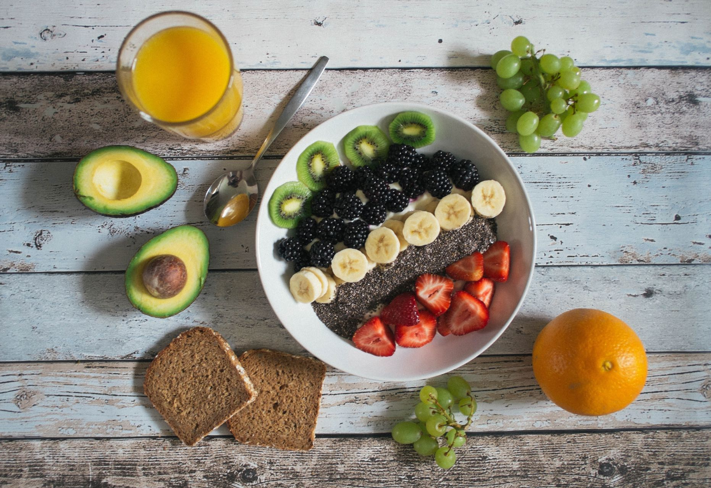

-
About This Website
Diabetes@Home is a web app designed for monitoring diabetes at home. It allows for both patients and clinicians to manage data such as blood glucose level, weight, doses of insulin taken and exercise remotely. This web app is available on desktop for clinicians, and on desktop, tablet and phone for patients.
Time-series can be turned on or off, and both safety thresholds and support messages can be customised for each individual patient. Clinicians will be alerted within 5 minutes if a patient enters data outside of the threshold.
Login is required for access to all features.
This web app is developed by George Yu, Tony Xie, Lily Li, Sean Xiao and Stephen Liao.
-
Photo Gallery
